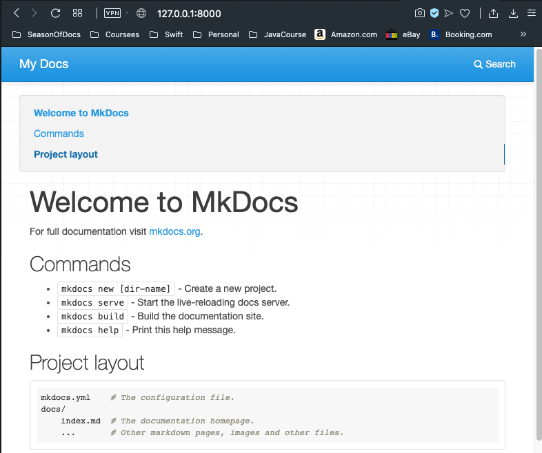
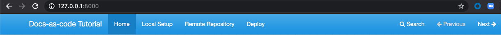

Setting Up Your Local Project
This section guides you through the process of creating your local documentation repository.
- Install MkDocs by running this command in your Terminal:
pip install mkdocs - Verify the installation by running this command:
mkdocs --version
You should get something like this as a response:
mkdocs, version 1.0.4 from ... - Run this command to create your local project:
mkdocs new docs-as-code-tutorial(ℹ) You can use a different name for your project
This creates a folder with a configuration file calledmkdocs.ymland a folder calleddocs, which contains anindex.mdfile.
 The
The index.mdfile is the main page of your new site. You can add more pages there by creating new Markdown files inside thedocsfolder. We will get to that later. - Navigate to your created project with:
cd docs-as-code-tutorial - You can preview your static site as you work on it by running the following command:
mkdocs serve
This command starts a local server with your rendered page so you can see how it will look before you publish it. - Open a web browser and go to the local http server listed in the last command response (
http://127.0.0.1:8000/) to see your rendered page. 
Customizing Your Site
Now you can start modifying the files in your project with your documentation details.
- Open the
index.mdfile and change the title and information in the file and save them to see the changes update on your local server. - Open the
mkdocs.ymlfile and change thesite_namevalue to your documentation project name:
site_name: Docs-as-code Tutorial
Creating More Pages
You can add more pages to your site by modifying the mkdocs.yml configuration file. To do so, add the name of each page you want to add to your site and the file corresponding as key: value pairs under a nav key:
site_name: Docs-as-code Tutorial
nav:
- Home: index.md
- Local Setup: local-site.md
- Remote Repository: repo.md
- Deploy: deploy.md
The order of the files is going to be the same in which they will appear on your navigation panel:

Configuring Files For Deployment
To ensure a smooth deployment with Netlify, you need to add some configuration files to your project.
- Create a new file called
.gitignorein your main project directory with the following line as its content:
site/
- Create a new file called
requirements.txtin your main project directory with the following line as its content:
mkdocs>=0.9.0
Your project structure must be something like the following:
docs-as-code-tutorial
├── docs
| ├── index.md
| └── local-site.md
| └── repo.md
| └── deploy.md
├── .gitignore
├── mkdocs.yml
└── requirements.txt